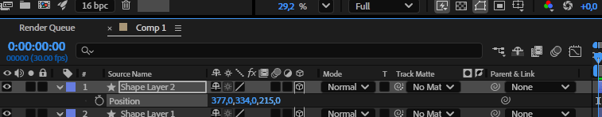
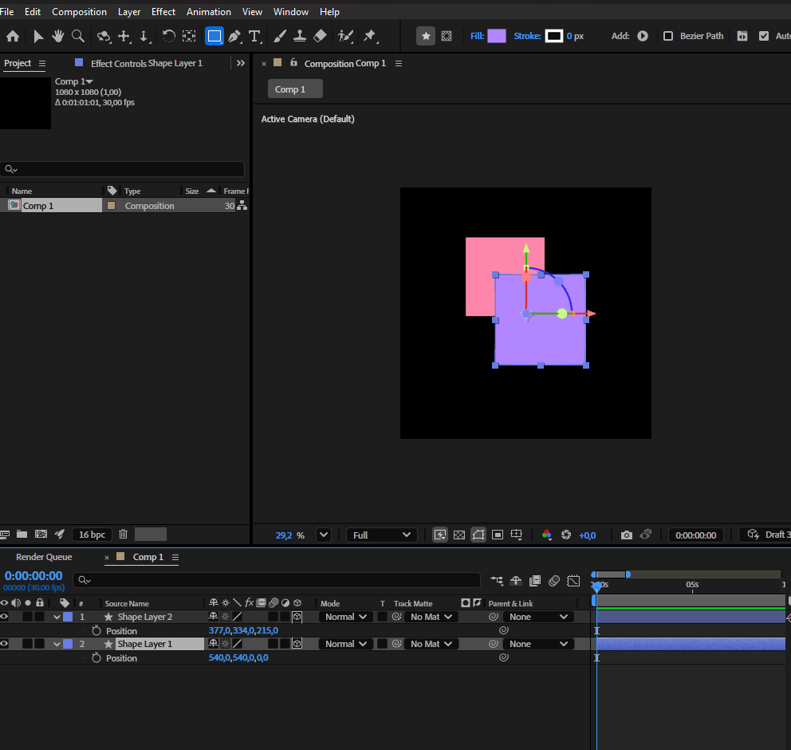
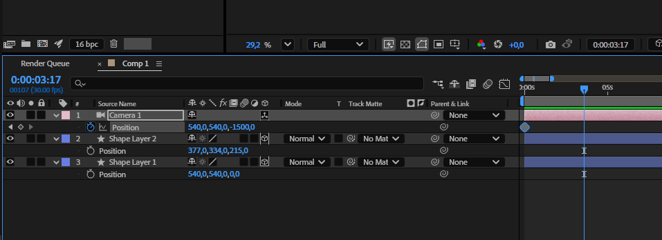
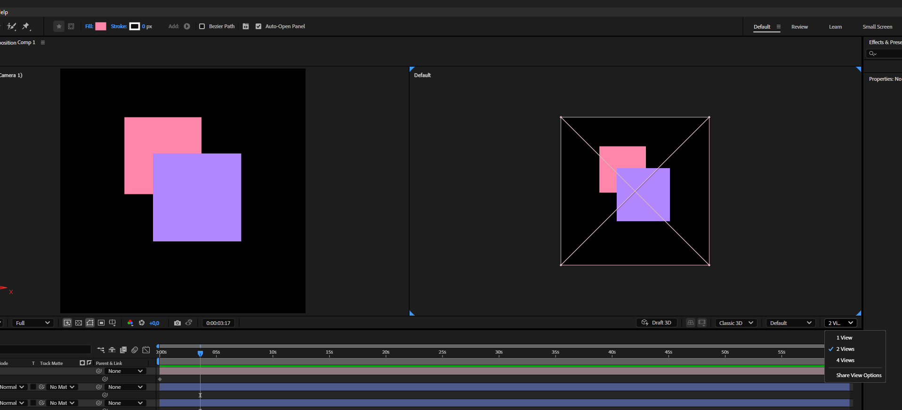
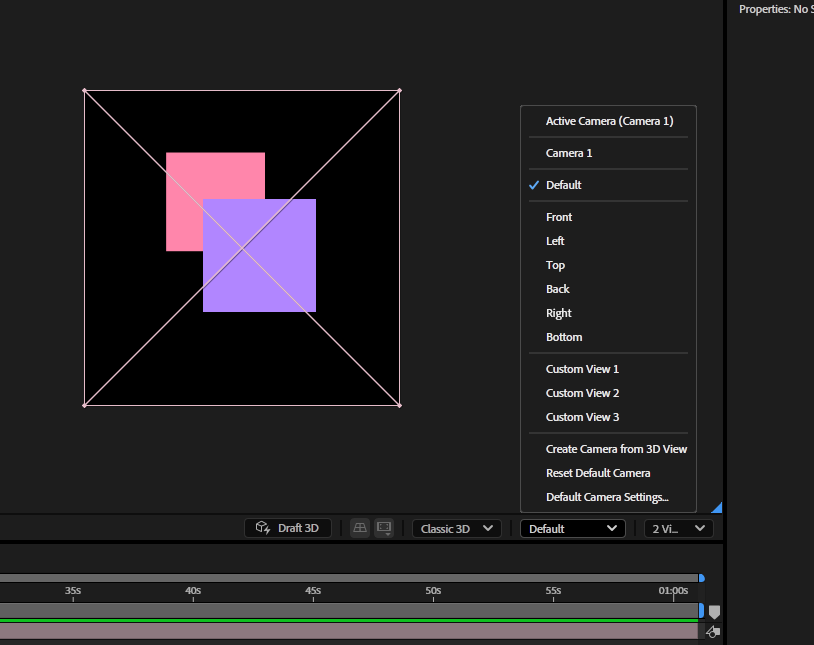
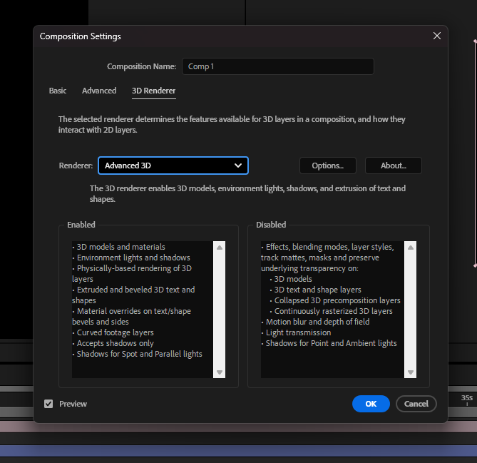
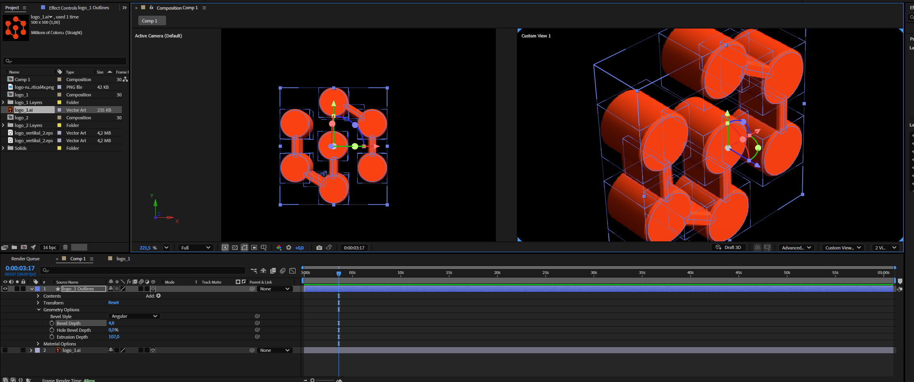
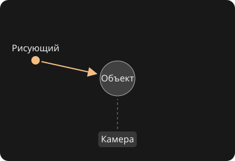
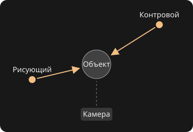
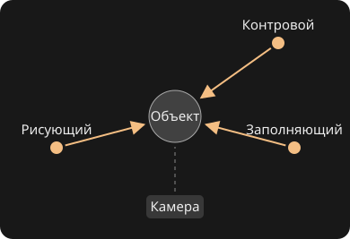

Методы работы с 3D
Один и тот же логотип можно собрать из плоских пятен, разложить на нескольких планах или превратить в объёмный объект. Выбор зависит от того, что должно происходить в кадре. Разберём, когда достаточно плоскости, когда нужна камера и когда удобнее работать с отдельной 3D-сценой.
Что меняется между 2D и 3D
Представим короткую заставку для выставки. В 2D название складывается из букв, маски открывают цветные формы, а пауза перед финалом помогает прочитать название. Мы контролируем композицию непосредственно в кадре. Можно нарисовать перспективу, тень или даже имитировать поворот предмета. Для плакатной графики и точной типографики это часто самый прямой путь.

В 2,5D те же буквы и формы можно поставить на разной глубине, как картонные декорации. При боковом движении камеры ближние элементы заметнее смещаются относительно дальних. Это параллакс. Слой может наклоняться и перекрывать другие слои, но сбоку у него не появится толщина.

В 3D с геометрией у буквы есть лицевая, боковая и задняя стороны. Её можно обойти камерой, повернуть к свету, увидеть блик на грани и тень на соседнем объекте. При смене ракурса движок пересчитывает изображение из той же сцены. Материалы, свет и движение камеры становятся частью замысла, а не деталями, которые приходится рисовать отдельно для каждого вида.

Ни один способ не делает заставку автоматически выразительнее. Плоская графика может быть сложнее по ритму, чем объёмная сцена, а 3D может выглядеть как иллюстрация. В одном ролике их легко сочетать: объёмный объект даёт движение и фактуру, а плоский текст остаётся на экране и хорошо читается.
Первые настройки 3D в After Effects
Соберите пробную сцену из двух плоских слоёв и камеры. На ней можно увидеть, какие переключатели относятся к слою, какие к просмотру, а какие к рендереру всей композиции.
1. Включение 3D у слоя
В панели Timeline нажмите Toggle Switches / Modes внизу, если сейчас видны режимы наложения. В режиме Switches найдите столбец со значком кубика. Нажмите пустую ячейку в этом столбце напротив нужного слоя. Другой путь для выделенного слоя находится в Layer → 3D Layer.

2. Расположение слоёв по глубине
Выделите первый слой и нажмите P, чтобы открыть Position. После включения 3D у него три координаты. Оставьте Z первого слоя равным 0 и задайте второму, например, 400. Сохраните разные положения по X, чтобы видеть оба слоя. Нажмите R и попробуйте немного изменить Y Rotation, чтобы увидеть наклон плоскости.

3. Создание камеры
Откройте Layer → New → Camera. Для простого проезда выберите One-Node Camera и оставьте глубину резкости выключенной. Камера появится отдельным слоем. Поставьте первый ключ Position, сдвиньте указатель времени и немного измените X. Проверьте, что камера активна в этот момент на Timeline.

4. Два вида в панели Composition
Внизу панели Composition откройте меню Select View Layout, в котором обычно написано 1 View. Выберите 2 Views, например горизонтальную раскладку. Выделите одну половину панели и в меню 3D View установите Active Camera. Выделите вторую и выберите Top. В одном окне будет кадр, в другом положение камеры и расстояние между слоями.

5. Переключение ракурсов
В том же меню выберите Front, Right или Custom View, чтобы разобраться с положением объектов. Чтобы вернуться к проверке итогового кадра, установите Active Camera. В меню также можно выбрать камеру по имени. При нескольких камерах итоговый кадр берётся с верхней включённой камеры, которая действует в текущий момент.

Где включить геометрию. Для разнесённых плоскостей достаточно обычной 3D-композиции. Для экструзии текста или шейпа откройте Composition → Composition Settings → 3D Renderer и выберите поддерживающий её рендерер, например Advanced 3D. Затем раскройте Geometry Options у 3D-текста или шейпа. Кубик на фотографии позволяет менять её положение в пространстве. Чтобы сделать объём по её силуэту, сначала понадобится контур.

Справка Adobe о видах и раскладках · Практика с камерой в Adobe Learn.
Параллакс и подготовка слоёв
Параллакс можно заметить из окна поезда. Ближайшие столбы быстро проходят перед глазами, дома двигаются медленнее, а далёкий горизонт почти неподвижен. В моушн-дизайне это даёт ощущение глубины даже в сцене из плоских изображений. В 2D тот же эффект можно задать вручную, если анимировать планы с разной скоростью. В 2,5D их смещение рассчитывается из положения камеры и расстояния до каждого плана.

Из чего собрать сцену
Возьмём фотографию улицы. На переднем плане оставим вывеску и край стены, в середине поставим витрину с человеком, на дальнем плане сохраним здания и небо. Разделение определяется не количеством объектов, а тем, как они перекрывают друг друга и на какой глубине должны двигаться. Два объекта на одной стене можно оставить в общем слое, если они должны двигаться как единая поверхность.
- Вырежьте планы. Для каждого подготовьте слой с прозрачным краем. При импорте PSD как композиции вариант Retain Layer Sizes сохраняет границы отдельных слоёв. Это удобно, если нужно повернуть конкретную деталь вокруг её собственной опорной точки.
- Восстановите скрытые области. Дорисуйте фон под человеком, продолжите стену за вывеской и оставьте запас по краям. Чем сильнее движение камеры, тем больше исходного изображения придётся восстановить.
- Разнесите слои в глубину. Включите кубик 3D Layer на Timeline. В исходной системе координат AE X растёт вправо, Y вниз, Z в глубину. Начните с небольшого расстояния между планами и настройте масштаб каждого так, чтобы первый кадр сохранял исходную композицию.
- Проверьте сцену в двух видах. В Active Camera оценивайте кадр, в Top смотрите взаимное положение камеры и слоёв. Сделайте короткий боковой проезд и проверьте начало, середину и конец. Ищите участки, где открывается прозрачность, пересекаются планы или заметна плоская форма вырезки.
Включение кубика даёт слою три координаты и повороты вокруг трёх осей. Картинка при этом остаётся плоскостью. Поворот по Y похож на открывание двери, по X на наклон крышки, по Z на привычное вращение в кадре. Anchor Point определяет, где находится шарнир. Если дверь вращается вокруг центра, сначала перенесите опорную точку к петлям.
Задача на просмотр. Сравните кадр до и после проезда. Какой элемент выдает глубину сильнее всего? Если ближний план буквально вылетает за кадр, попробуйте сократить ход камеры или придвинуть его к среднему плану.
Работа с камерой в After Effects
Положение камеры определяет, откуда мы смотрим. Её направление определяет, что попадает в кадр. Фокусное расстояние влияет на поле зрения. Эти параметры полезно менять по одному, чтобы понимать, почему композиция стала другой.
| Приём | Что меняется | Где использовать |
|---|---|---|
| Боковой проезд | Камера смещается в сторону, взаимное положение планов в кадре меняется. | Раскрыть пространство коллажа или показать скрытый объект. |
| Наезд | Камера приближается. Относительный размер ближних и дальних объектов меняется. | Подвести взгляд к детали. |
| Зум | Меняется поле зрения при прежней позиции камеры. Точка наблюдения остаётся на месте. | Кадрировать сцену без бокового смещения планов. |
| Облёт | Камера движется вокруг цели и показывает её с разных сторон. | Показать толщину, форму и поведение бликов на модели. |
Точка интереса и нулевые объекты
У Two-Node Camera есть Point of Interest. Если двигать камеру при неподвижной цели, направление взгляда подстроится под неё. One-Node Camera удобно направлять собственной ориентацией и поворотами. Для прямого проезда с постоянным направлением можно начать с одноузловой камеры.
Для облёта поставьте 3D-нуль в центр объекта, отодвиньте камеру от него и назначьте нуль родителем камеры. При повороте нуля по Y камера проходит по дуге. Начните с короткой дуги, например от 0° до 35°. Если объект уезжает из кадра, проверьте, где находится центр нуля и куда смотрит камера. Когда движение усложняется, один нуль может управлять общим перемещением, а другой облётом. Так проще менять каждую часть траектории отдельно.
Движение камеры заметно даже на неподвижном объекте, поэтому ему тоже нужны начало, акцент и остановка. Примените плавное ускорение и торможение, затем проверьте график скорости. Для заставки полезно оставить читаемый финальный кадр. Если включаете глубину резкости, подберите дистанцию фокуса по главному объекту и проверьте, доступен ли эффект в выбранном рендерере. Размытие букв может мешать чтению.
Псевдообъём средствами эффектов
Для вращающейся планеты, кольца из букв или рельефной плашки часто достаточно преобразовать изображение внутри слоя. Эффект рассчитывает видимую форму, а аниматор управляет её параметрами. Это удобно для отдельного графического элемента, у которого заранее известен ракурс.
CC Sphere и CC Cylinder
CC Sphere оборачивает плоскую текстуру вокруг сферы. Возьмите прямоугольную карту или полосатый узор, настройте радиус и анимируйте вращение по Y внутри эффекта. Для полного оборота проверьте левый и правый края текстуры. Если они не стыкуются, при вращении будет виден шов. Свет внутри эффекта помогает отделить светлую сторону от тёмной.
CC Cylinder оборачивает слой вокруг цилиндра. Наберите надпись в широкой прекомпозиции, оставьте место между повторами и примените эффект к прекомпозиции. Проверьте, что надпись читается на передней части и что стык не срезает буквы. Вращайте цилиндр параметром эффекта. Для зацикливания задайте один полный оборот и линейную скорость, а на стыке цикла избегайте повторного показа одинакового конечного кадра.
Если внутри кольца должен стоять предмет, можно вывести заднюю и переднюю части цилиндра отдельными копиями эффекта, а предмет расположить между ними в стеке слоёв. Такой приём позволяет настроить перекрытие на монтаже.


Рельеф, тень и искажение
Bevel Alpha добавляет светлую и тёмную кромку по контуру прозрачного слоя. Попробуйте его на шейпе с чистым альфа-каналом, например на круге с вырезом. Поставьте направление света и подберите толщину кромки. Drop Shadow поможет отделить эту плашку от фона. Если тень изображает контакт с поверхностью, держите её близко к предмету, а если предмет парит, проверьте, как изменится расстояние и мягкость тени.
Displacement Map сдвигает пиксели по значениям карты. Мягкий градиент или карта яркости помогают имитировать изгиб рисунка на ткани или стекле. Сравните результат на решётке из прямых линий, где деформацию легко увидеть. Для управляемого объёма сочетайте деформацию с бликом и тенью, согласованными по направлению. Эти приёмы создают форму в изображении, поэтому положение света и перекрытия нужно продумать внутри композиции.
Объёмный текст и импорт моделей
Геометрия из текста и шейпов
Экструзия вытягивает контур в глубину. Это простой способ превратить знак, букву или пиктограмму в объект с боковыми гранями. В Composition Settings → 3D Renderer выберите рендерер с поддержкой нужной геометрии, например Advanced 3D. Включите 3D у текста или шейпа и откройте Geometry Options. Начните с небольшой Extrusion Depth и скоса Bevel. При повороте скос ловит свет и помогает увидеть границу между лицом и боковой стороной.
Возьмите широкую букву и тонкую букву одинаковой высоты. Одинаковый скос может выглядеть аккуратно на первой и съедать контур второй. Оцените форму в финальном размере и при нужном ракурсе, затем подберите толщину и материал. Если текст должен читаться постоянно, оставьте отдельный плоский титр, а объёмную букву используйте как графический акцент.
Экструзия из картинки
Начните с PNG с прозрачным фоном, например одноцветного знака. Его альфа-канал описывает видимый силуэт. Чтобы из этого силуэта получились боковые грани, переведите границу в векторный контур и выдавите шейп.
- Получите маски. Выделите PNG на Timeline и откройте Layer → Auto-trace. Выберите Current Frame и канал Alpha. Включите предпросмотр и проверьте, что контур идёт по знаку. Для непрозрачной картинки сначала изолируйте знак маской или подготовьте прозрачный PNG.
- Перенесите контуры в шейп. Нажмите M на исходном слое, чтобы увидеть маски. Создайте Layer → New → Shape Layer. В Contents → Add → Path добавьте путь и вставьте в свойство Path скопированное значение Mask Path. Добавьте Fill. Повторите перенос для отдельных частей, затем совместите контуры с исходным изображением. Начинайте с исходника без поворота и масштабирования, чтобы проще проверить совпадение.
- Проверьте отверстия. Если у знака есть просвет, например внутри буквы «О», поместите внешний и внутренний контуры в одну группу и проверьте правило заливки Even-Odd. При необходимости поправьте контуры вручную. Мелкая текстура и полупрозрачные края обычно дают лишние точки, поэтому для чистого знака удобен подготовленный вектор.
- Задайте толщину. Спрячьте исходное изображение, включите 3D на шейпе и откройте Geometry Options → Extrusion Depth. Добавьте небольшой скос и поверните шейп по Y, чтобы увидеть боковую грань. Поставьте боковой свет и проверьте силуэт с нескольких ракурсов.

При Auto-trace по альфа-каналу все непрозрачные цвета относятся к одному силуэту. Для нескольких однотонных деталей подготовьте отдельные контуры и заливки. Если на лицевой стороне нужны рисунок, градиент или фотография, можно положить исходное изображение отдельной 3D-плоскостью поверх лица шейпа, слегка разнести их по глубине и связать с одним 3D-нулём. Проверьте совпадение при повороте. Для точного совмещения изображения с формой, сложных скосов или текстур на боковых поверхностях соберите геометрию и назначьте текстуру в Blender.
Подготовка файла в Blender
Если форма сложнее плоского контура, подготовьте модель отдельно. Упаковка GLB удобна для передачи геометрии и совместимых текстур одним файлом. У glTF ресурсы могут храниться отдельно, поэтому переносите их вместе с файлом. У OBJ для материалов часто нужны файл MTL и связанные изображения. Для первой пробы возьмите один предмет и простой материал.
- Уберите из экспорта лишние объекты и проверьте, какой частью модели вы будете управлять. Центр у основания удобен, если предмет должен стоять на столе. Центр в середине подходит для вращения в воздухе.
- Проверьте направление модели и масштаб. Если при экспорте включаете применение модификаторов, убедитесь, что сетка соответствует видимому результату. Для текстур используйте поддерживаемые каналы материала. Сложные процедурные узлы Blender при необходимости запеките в изображения.
- Экспортируйте выделенное в GLB. При передаче анимации сначала проверьте короткий фрагмент и поддержку конкретного типа анимации в вашей версии AE. Самый простой вариант для знакомства с импортом состоит в том, чтобы анимировать положение и поворот уже в композиции.
Проверка модели в композиции
Импортируйте файл, добавьте его на Timeline и проверьте Advanced 3D. В Model Settings и свойствах трансформации подберите размер и положение. Поставьте камеру так, чтобы видеть предмет и плоскость под ним. Один поворот на четверть оборота покажет проблемы с опорной точкой и ориентацией. Если предмет движется по кругу вместо вращения на месте, проверьте центр модели или используйте нуль в нужной точке.
Если материал выглядит иначе, сначала проверьте наличие текстур и цвет при нейтральном свете. Затем сравните шероховатость и отражения. Разницу может давать как перенос материала, так и другая среда освещения. Файл модели удобен, пока нужен доступ к ракурсу и трансформациям. Для точного сохранения вида сложного шейдера удобнее передавать готовый рендер.
Справка Adobe по импорту моделей
Свет, тени и материалы
Свет помогает зрителю считать форму. Поставьте перед камерой матовый объект со скруглёнными гранями и начните с одного направленного источника сбоку и выше объекта. Сравните его с фронтальным светом. Сбоку лучше видны перепады тона между поверхностями, а при фронтальном свете форма обычно выглядит ровнее. В отражающем материале оценивайте также положение и форму бликов.
- Рисующий свет задаёт главное направление. Им удобно обозначить угол и показать объём.
- Заполняющий свет смягчает тёмную сторону. Если заполнение слишком сильное, разница между планами теряется.
- Контровой свет подчёркивает дальнюю кромку и отделяет предмет от похожего по тону фона. Он особенно заметен на тёмном объекте.
- Environment Light в Advanced 3D даёт освещение и отражения от окружения. HDR-карта полезна, когда форму задают широкие отражения. Вращайте окружение и следите, куда переезжают яркие участки.
Схемы расстановки света
Световую схему удобно рисовать сверху. Стрелки показывают, куда направлены источники. Высоту подберите отдельно в боковом ракурсе. Положение, яркость и размер источников можно менять под материал и задачу кадра.

Поставьте рисующий свет сбоку и немного выше предмета. Для первого теста оставьте тени глубокими. Схема подходит, если нужно показать фактуру, скругления и переход от светлой грани к тёмной.

Добавьте источник за предметом и сместите его вбок. Настройте его так, чтобы он выделял кромку со стороны камеры. Попробуйте эту схему для тёмного предмета на тёмном фоне.

Поставьте рисующий и более слабый заполняющий по разные стороны от камеры, а контровой за предметом. Сначала настройте рисующий, затем заполните тени до нужной степени и в последнюю очередь добавьте светлую кромку.
В After Effects начните с Layer → New → Light. Для этих схем удобно использовать Spot и направлять его на объект через Point of Interest. Сравните три расстановки на одном предмете с неизменной камерой. Adobe · создание и настройка источников в After Effects.
В Blender попробуйте собрать ту же расстановку с источниками Area и сравнить ширину бликов и мягкость теней при изменении их размера. Blender Studio · типы источников и трёхточечный свет · Adobe · постановка света в CGI.
В AE Spot позволяет направить свет конусом, а Parallel даёт параллельные лучи. Возможности по типам источников и теням зависят от рендерера. Для тени проверьте, включено ли её отбрасывание у источника и объекта и есть ли поверхность, принимающая тень. Если фон остаётся обычным 2D-изображением, тень для контакта можно собрать отдельно в композитинге. Смотрите на результат при движении, поскольку смещение тени относительно предмета заметнее в анимации.

Небольшой опыт. Снимите один поворот с матовым и блестящим материалом при неизменном свете. Затем оставьте материал и измените направление окружения. Сравнение помогает понять, что изменило блик: свойство поверхности, движение объекта или свет.
Урок Adobe по Environment Light · Настройка теней в Advanced 3D
Из Blender в After Effects
Допустим, в Blender уже есть короткий поворот объекта, а в After Effects нужно собрать фон, надпись и финальный переход. Здесь можно передать кадры с прозрачностью. Камера, материалы и свет останутся в Blender. В After Effects можно двигать, перекрашивать и маскировать уже отрендеренное изображение, а новый ракурс потребует нового рендера.
Подготовка рендера
- Согласуйте размер кадра, частоту и диапазон. Например, четырёхсекундный план при 25 кадрах в секунду состоит из 100 кадров. Если первый кадр в Blender имеет номер 1, диапазон 1–100 даст нужную длительность.
- Включите Render Properties → Film → Transparent. В настройках вывода выберите PNG и RGBA. Прозрачный фон и сохранение альфа-канала нужно настроить отдельно. Сделайте тестовый кадр и положите его на светлый и тёмный фон.
- Сохраните последовательность в отдельную папку с постоянным префиксом, например
badge_0001.png. После пробного кадра просчитайте анимацию. Если рендер прервётся, можно продолжить с недостающего номера.
Сборка кадра
- В AE выберите первый файл и включите импорт последовательности. В Interpret Footage → Main проверьте частоту. Если 100 кадров интерпретированы как 30 fps, клип будет короче, чем задумывалось в Blender.
- Поставьте рендер между фоном и передним планом. Если часть объекта должна скрываться за стойкой или рукой, поместите вырезку этой детали выше. Тень можно подготовить в 3D отдельно или собрать простую контактную тень в AE.
- Сверьте контраст и цвет с соседними слоями. Сначала сравните эталонный кадр с просмотром в Blender. При цветных или чёрных краях проверьте, как AE интерпретирует альфа-канал. При расхождении общей яркости проверьте настройки цвета и преобразование для просмотра.
- Добавьте титр и эффекты после того, как предмет убедительно впишется в кадр. Если в рендере уже есть размытие движения или зерно, учитывайте их при обработке всей композиции.
Когда нужны отдельные проходы. Для простой заставки хватает готового рендера с альфа-каналом. Для более сложного кадра можно вывести отдельно предмет, тень или маску. Это даёт возможность менять их независимо. OpenEXR пригодится, если нужны линейные данные с широким диапазоном или дополнительные каналы. Согласуйте цветовое пространство двух программ и сделайте короткую пробу импорта, прежде чем запускать расчёт всей сцены.
Если работа ведётся в Cinema 4D, есть ещё один маршрут. Файл C4D можно подключить к AE через Cineware и править сцену в отдельном приложении. В Blender повторяющиеся формы удобно готовить через Geometry Nodes. В нашей лекции об этом есть примеры полей, волн и управляемых копий. Урок Adobe о Cinema 4D Lite · Процедурная анимация
Как закрепить графику в снятом кадре
В кадре с проездом мимо здания заголовок может стоять в пространстве на тротуаре. Для этого примените 3D Camera Tracker к исходному видео, дождитесь решения и выберите устойчивую группу точек на поверхности. Создайте камеру и привязку на этой плоскости, затем разместите графику. Проверьте её по всему кадру. Скользящая надпись может указывать на неверную плоскость или слабое решение трека.
Для первой пробы подойдёт короткий кадр с поступательным движением камеры и неподвижными деталями на разных планах. Если задача состоит в замене картинки на экране, плоскостной трек или привязка по углам часто дают более прямой путь. Если графика должна оказаться за человеком, дополнительно понадобится маска или ротоскопинг переднего плана.